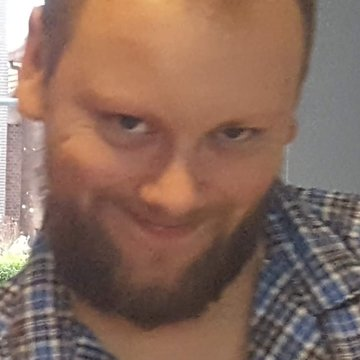

<!doctype html>
<html lang="nl">
<head>
<meta charset="utf-8">
<meta name="viewport" content="width=device-width,initial-scale=1,viewport-fit=cover">
<meta name="theme-color" content="#132539">
<title>An Iuchair Albannach</title>
<style>:root{padding-top:env(safe-area-inset-top,0px);padding-bottom:env(safe-area-inset-bottom,0px)}body{margin:0}img{max-width:100%}[hidden]{display:none!important}</style>
</head>
<body>
<link rel="stylesheet" href="https://fonts.googleapis.com/css2?family=IM+Fell+English+SC&family=Playfair+Display:ital,wght@0,400;0,500;0,600;0,700;1,400&display=swap">
<style>
/* Layout: zelfde "kaartenstapel" als de trouwgids: één kaart per scherm, horizontaal veegbaar, pijlen + stippen onderaan. */
:root{
  --bg:#132539; --surface:#1E3854; --fg:#F5F7FA; --muted:#B4C3D4;
  --accent:#A68D5A; --accent-text:#D2BF92; --accent-ink:#14263A;
  --tint:#294A6F; --line:#3B5C82; --gold:#A68D5A;
  --ok:#8FC9A0; --bad:#E39A8C; --heather:#C9A7E6; --loch:#8CC8C4;
  --font-display:"IM Fell English SC","Iowan Old Style",Georgia,serif;
  --font-body:"Playfair Display",Georgia,"Times New Roman",serif;
  color-scheme:dark;
}
*{box-sizing:border-box}
html,body{height:100%}
body{background:var(--bg);color:var(--fg);font-family:var(--font-body);font-size:16px;line-height:1.55;
  padding-left:max(16px,env(safe-area-inset-left,0px));padding-right:max(16px,env(safe-area-inset-right,0px));padding-block:12px;-webkit-font-smoothing:antialiased}
.app{height:100%;max-width:480px;margin-inline:auto;display:flex;flex-direction:column;gap:12px}
.track{flex:1 1 0;min-height:0;display:flex;overflow-x:auto;overflow-y:hidden;scroll-snap-type:x mandatory;scrollbar-width:none;overscroll-behavior-x:contain;border-radius:28px;scroll-behavior:smooth}
.track::-webkit-scrollbar{display:none}
.card{flex:0 0 100%;min-width:0;scroll-snap-align:start;scroll-snap-stop:always;overflow-y:auto;background:var(--surface);border:1px solid var(--line);border-radius:28px;padding:28px 22px 72px;display:flex;flex-direction:column;gap:18px}
.card>*{flex-shrink:0}
.eyebrow{font-size:12px;font-weight:600;letter-spacing:.14em;text-transform:uppercase;color:var(--accent-text);display:flex;align-items:center;gap:8px}
h1,h2,h3{font-family:var(--font-display);font-weight:400;margin:0;text-wrap:balance}
h1{font-size:clamp(2.6rem,13vw,3.6rem);line-height:.98;letter-spacing:-.01em}
h1 em{font-style:normal;color:var(--accent)}
h1 .sub{display:block;font-size:.5em;line-height:1.1;margin-top:.25em;color:var(--accent-text)}
h2{font-size:clamp(2rem,9vw,2.6rem);line-height:1.02;color:var(--accent)}
h3{font-size:1.5rem;line-height:1.1;color:var(--accent)}
p{margin:0}
.lead{font-size:17px;color:var(--muted)}
.muted{color:var(--muted)}
.icon{width:22px;height:22px;fill:none;stroke:currentColor;stroke-width:1.7;stroke-linecap:round;stroke-linejoin:round;flex:0 0 auto}
.rings{width:72px;height:44px;color:var(--gold)}
.cover{justify-content:space-between}
.cover-top{display:flex;flex-direction:column;gap:18px}
.facts{display:grid;gap:10px}
.fact{display:flex;align-items:center;gap:14px;background:var(--tint);border-radius:18px;padding:14px 16px}
.fact small{display:block;font-size:12px;letter-spacing:.08em;text-transform:uppercase;color:var(--muted);font-weight:600}
.fact strong{font-size:17px;font-weight:600}
.swipe{display:flex;align-items:center;gap:8px;color:var(--muted);font-size:14px}
.swipe .icon{width:18px;height:18px;animation:nudge 2.2s ease-in-out infinite}
@keyframes nudge{0%,100%{transform:translateX(0)}50%{transform:translateX(5px)}}
.avatar{width:56px;height:56px;border-radius:50%;object-fit:cover;border:2px solid var(--accent);flex:none}
.avatar.lg{width:84px;height:84px}
.duo{display:flex;justify-content:center}
.duo img{margin:0 -6px}
.roles{display:grid;gap:12px}
.rbtn{display:grid;grid-template-columns:56px 1fr 24px;gap:14px;align-items:center;text-align:left;min-height:88px;padding:16px;border-radius:22px;cursor:pointer;font:inherit;font-size:17px;font-weight:600;line-height:1.35;border:2px solid var(--accent);background:transparent;color:var(--fg)}
.rbtn.primary{background:var(--accent);color:var(--accent-ink);box-shadow:0 6px 18px rgba(0,0,0,.35)}
.rbtn .x-sub{display:block;font-size:14px;font-weight:500;opacity:.9}
.rbtn .badge{width:56px;height:56px;border-radius:50%;display:grid;place-items:center;background:var(--tint);color:var(--accent-text)}
.rbtn.primary .badge{background:var(--accent-ink);color:var(--accent)}
.note{display:grid;grid-template-columns:24px 1fr;gap:12px;background:var(--tint);border-radius:18px;padding:16px;font-size:15.5px}
.note .icon{color:var(--accent-text)}
.note strong{display:block;font-size:12px;letter-spacing:.1em;text-transform:uppercase;color:var(--accent-text);margin-bottom:4px}
.clue{display:grid;gap:12px;border-radius:18px;padding:16px;border:2px solid var(--line);background:transparent;min-width:0}
.clue.mine{border-color:var(--accent);background:var(--tint)}
.clue.theirs{border-style:dashed}
.who{display:flex;align-items:center;gap:12px}
.who .avatar{width:44px;height:44px}
.who .tag{font-size:12px;font-weight:700;letter-spacing:.08em;text-transform:uppercase;color:var(--accent-text)}
.answer{display:grid;gap:10px}
.answer input{width:100%;font:inherit;font-family:var(--font-display);font-size:24px;letter-spacing:.14em;text-transform:uppercase;padding:12px 14px;border-radius:16px;border:2px solid var(--line);background:var(--bg);color:var(--fg);text-align:center}
.answer input.shake{animation:shake .35s}
@keyframes shake{25%{transform:translateX(-6px)}75%{transform:translateX(6px)}}
.btn{display:flex;align-items:center;justify-content:center;gap:10px;min-height:56px;padding:14px 18px;border-radius:16px;border:2px solid var(--accent);font:inherit;font-weight:600;font-size:17px;cursor:pointer;transition:transform .12s;width:100%}
.btn:active{transform:scale(.98)}
.btn-primary{background:var(--accent);color:var(--accent-ink)}
.btn-secondary{background:transparent;color:var(--accent-text)}
.btn:disabled{opacity:.4;cursor:default}
.tl-link{display:inline-flex;align-items:center;gap:6px;font-size:14px;font-weight:600;color:var(--accent-text);background:none;border:0;padding:8px 0;cursor:pointer;font-family:inherit;min-height:40px;justify-self:center}
.feedback{min-height:22px;font-size:15px}
.feedback.bad{color:var(--bad)}
.hintbox{font-size:15px;color:var(--muted);border-top:1px dashed var(--line);padding-top:10px}
.tokens{display:flex;flex-wrap:wrap;gap:8px}
.token{font-size:12px;font-weight:700;letter-spacing:.06em;text-transform:uppercase;padding:4px 10px;border-radius:99px;background:var(--surface);color:var(--accent-text);border:1px solid var(--line)}
.token.got{background:var(--accent);color:var(--accent-ink);border-color:var(--accent)}
.solved{display:grid;gap:10px;text-align:center;background:var(--tint);border-radius:18px;padding:18px}
.solved .big{font-family:var(--font-display);font-size:2.4rem;line-height:1;color:var(--accent)}
.letter{white-space:pre-line;font-size:16px;line-height:1.6}
/* puzzelvisuals */
.week{display:grid;grid-template-columns:repeat(7,1fr);gap:5px;text-align:center}
.week div{background:var(--surface);border-radius:10px;padding:8px 0;display:grid;gap:2px}
.week b{font-family:var(--font-display);font-size:20px;color:var(--accent-text);font-variant-numeric:tabular-nums}
.week small{font-size:11px;color:var(--muted)}
.sonar{display:grid;grid-template-columns:26px repeat(5,1fr);gap:4px;text-align:center;font-variant-numeric:tabular-nums}
.sonar div{padding:7px 0;border-radius:8px;background:var(--surface);font-family:var(--font-display);font-size:18px}
.sonar .h{background:transparent;color:var(--loch);font-family:var(--font-body);font-size:13px;font-weight:700}
.bands{display:flex;height:64px;border-radius:12px;overflow:hidden;border:1px solid var(--line)}
.bands span{flex:1}
.legend{display:grid;grid-template-columns:1fr 1fr;gap:8px}
.legend div{display:flex;align-items:center;gap:10px;background:var(--surface);border-radius:10px;padding:8px 10px;font-size:15px}
.legend i{width:22px;height:22px;border-radius:5px;display:inline-block;border:1px solid rgba(255,255,255,.15)}
.legend b{font-family:var(--font-display);font-size:20px;color:var(--accent-text);margin-left:auto}
.slots{display:flex;gap:6px;flex-wrap:wrap}
.slots div{width:40px;height:48px;border-radius:8px;background:var(--surface);display:grid;place-items:center;font-family:var(--font-display);font-size:24px;position:relative}
.slots div.empty{border:1.5px dashed var(--line);background:transparent;color:var(--line)}
.slots small{position:absolute;top:2px;right:5px;font-size:10px;color:var(--muted);font-family:var(--font-body)}
.cask{display:grid;grid-template-columns:1fr 1fr;gap:8px}
.cask b{font-size:22px}
.cask div{background:var(--surface);border-radius:10px;padding:10px;text-align:center}
.cask b{display:block;font-family:var(--font-display);font-size:26px;color:var(--accent-text)}
.cask small{color:var(--muted);font-size:12px;letter-spacing:.08em;text-transform:uppercase}
.quaich{display:grid;place-items:center;padding:4px 0}
/* prijs */
.prize{margin:0;display:grid;gap:8px;justify-items:center;text-align:center}
.prize svg{width:min(78%,260px);height:auto;filter:drop-shadow(0 10px 24px rgba(0,0,0,.45))}
.prize figcaption{font-size:14px;color:var(--accent-text);font-style:italic}
.pz-glow{animation:pulse 3.2s ease-in-out infinite}
.pz-crown{transform-origin:120px 70px;animation:crown 1.1s cubic-bezier(.2,1.4,.4,1) both}
.pz-hearts{transform-origin:120px 170px;animation:pop .9s .25s cubic-bezier(.2,1.4,.4,1) both}
.pz-key{transform-origin:120px 262px;animation:pop .9s .5s cubic-bezier(.2,1.4,.4,1) both}
@keyframes pop{from{transform:scale(0);opacity:0}to{transform:scale(1);opacity:1}}
@keyframes crown{from{transform:translateY(-40px);opacity:0}to{transform:translateY(0);opacity:1}}
@keyframes pulse{0%,100%{opacity:.6}50%{opacity:1}}
#confetti{position:fixed;inset:0;pointer-events:none;z-index:30}
/* figuurtjes */
.critter{position:fixed;bottom:calc(74px + env(safe-area-inset-bottom,0px));left:-90px;width:64px;height:64px;pointer-events:none;z-index:25;animation:walk var(--dur,14s) linear forwards}
.critter.flip{transform:scaleX(-1)}
.critter svg{width:100%;height:100%;animation:waddle .5s ease-in-out infinite alternate;transform-origin:50% 100%}
.critter.hop svg{animation:hop .7s cubic-bezier(.4,0,.6,1) infinite}
@keyframes walk{from{transform:translateX(0)}to{transform:translateX(calc(100vw + 180px))}}
@keyframes waddle{from{transform:rotate(-7deg) translateY(0)}to{transform:rotate(7deg) translateY(-2px)}}
@keyframes hop{0%,100%{transform:translateY(0) scaleY(1)}30%{transform:translateY(-26px) scaleY(1.05)}60%{transform:translateY(0) scaleY(.92)}}
.loch{position:fixed;left:0;right:0;bottom:0;height:0;z-index:24;pointer-events:none;overflow:visible;animation:rise 1.6s cubic-bezier(.2,.8,.2,1) forwards, drain 1.8s ease-in var(--hold,14s) forwards}
.loch .water{position:absolute;inset:0;background:linear-gradient(180deg,rgba(79,155,151,.55),rgba(19,37,57,.92))}
.loch .wave{position:absolute;left:0;right:0;top:-18px;height:34px;width:200%;z-index:2;animation:waveslide 5s linear infinite}
.loch .wave svg{display:block;width:100%;height:100%}
.nessie{position:absolute;left:0;bottom:calc(100% - 16px);z-index:1;width:min(80vw,360px);height:auto;animation:swim var(--dur,13s) linear both}
.nessie svg{width:100%;height:auto;display:block;animation:bob 2.4s ease-in-out infinite;transform-origin:50% 100%}
@keyframes rise{from{height:0}to{height:50vh}}
@keyframes drain{to{height:0}}
@keyframes waveslide{from{transform:translateX(0)}to{transform:translateX(-50%)}}
@keyframes swim{from{transform:translateX(-110%)}to{transform:translateX(calc(100vw + 20px))}}
@keyframes bob{0%,100%{transform:translateY(0)}50%{transform:translateY(-6px)}}
.poem{display:grid;gap:10px;border-top:1px dashed var(--line);border-bottom:1px dashed var(--line);padding:18px 4px}
.poem h3{color:var(--accent);font-size:1.7rem}
.verse{white-space:pre-line;font-style:italic;font-size:16.5px;line-height:1.55}
/* nav */
.nav{display:flex;align-items:center;justify-content:space-between;gap:12px}
.nav-btn{width:48px;height:48px;border-radius:50%;border:1.5px solid var(--line);background:var(--surface);color:var(--fg);display:grid;place-items:center;cursor:pointer}
.nav-btn:disabled{opacity:.35;cursor:default}
.dots{display:flex;gap:2px;align-items:center}
.dot{width:22px;height:40px;border:0;background:none;padding:0;cursor:pointer;display:grid;place-items:center}
.dot::after{content:"";width:8px;height:8px;border-radius:99px;background:var(--line);transition:width .2s,background-color .2s}
.dot.done::after{background:var(--accent-text)}
.dot[aria-current="true"]::after{width:22px;background:var(--accent)}
.dot.lock{opacity:.4}
button:focus-visible,a:focus-visible,input:focus-visible{outline:3px solid var(--accent);outline-offset:3px}
@media (prefers-reduced-motion:reduce){*{animation:none!important;transition:none!important}.track{scroll-behavior:auto}.critter{display:none}}
</style>

<svg width="0" height="0" style="position:absolute" aria-hidden="true">
 <defs>
  <symbol id="i-left" viewBox="0 0 24 24"><path d="M14.5 5.5L8 12l6.5 6.5"/></symbol>
  <symbol id="i-right" viewBox="0 0 24 24"><path d="M9.5 5.5L16 12l-6.5 6.5"/></symbol>
  <symbol id="i-arrow" viewBox="0 0 24 24"><path d="M4 12h15M13 6l6 6-6 6"/></symbol>
  <symbol id="i-pin" viewBox="0 0 24 24"><path d="M12 21s-7-6.2-7-11.2a7 7 0 0114 0C19 14.8 12 21 12 21z"/><circle cx="12" cy="9.8" r="2.6"/></symbol>
  <symbol id="i-key" viewBox="0 0 24 24"><circle cx="8" cy="12" r="4.5"/><path d="M12.5 12H21M18 12v3.5M15 12v2.5"/></symbol>
  <symbol id="i-book" viewBox="0 0 24 24"><path d="M4 5.5A2.5 2.5 0 016.5 3H20v15H6.5A2.5 2.5 0 004 20.5zM4 20.5V5.5M20 18v3H6.5"/></symbol>
  <symbol id="i-eye" viewBox="0 0 24 24"><path d="M2.5 12S6 5.5 12 5.5 21.5 12 21.5 12 18 18.5 12 18.5 2.5 12 2.5 12z"/><circle cx="12" cy="12" r="3"/></symbol>
  <symbol id="i-both" viewBox="0 0 24 24"><circle cx="9" cy="8" r="3.5"/><circle cx="16.5" cy="9.5" r="2.8"/><path d="M3 20c0-3.5 2.7-6 6-6s6 2.5 6 6M15 14.5c2.6 0 5 2 5 5"/></symbol>
  <symbol id="i-star" viewBox="0 0 24 24"><path d="M12 3l2.7 5.6 6.1.9-4.4 4.3 1 6.1L12 17l-5.4 2.9 1-6.1-4.4-4.3 6.1-.9z"/></symbol>
  <symbol id="i-home" viewBox="0 0 24 24"><path d="M3 11l9-7 9 7M5.5 9.5V20h13V9.5"/></symbol>
 </defs>
</svg>

<canvas id="confetti" hidden></canvas>
<main class="app">
  <div class="track" id="track" tabindex="0" aria-label="Escape game, veeg naar links of rechts"></div>
  <nav class="nav">
    <button class="nav-btn" id="prev" aria-label="Vorige"><svg class="icon"><use href="#i-left"/></svg></button>
    <div class="dots" id="dots"></div>
    <button class="nav-btn" id="next" aria-label="Volgende"><svg class="icon"><use href="#i-right"/></svg></button>
  </nav>
</main>

<script>
const CONFIG = {
  bruid: "Yenthe",          // naam van de bruid
  bruidegom: "Renaat",  // naam van de verloofde
  afzender: "Quinten & Jente",  // wie het cadeau geeft
  slotbrief: `Jullie hebben An Iuchair Albannach gevonden: de Schotse Sleutel.

Bij onze trouw gaven jullie ons een Ierse geluksmunt en een gelukshanger. Die hebben hun werk gedaan. Daarom zochten wij voor jullie een Schots geluksteken: de luckenbooth, twee verstrengelde hartjes met een kroon, die al 300 jaar in Schotland aan een geliefde wordt gegeven als teken van trouw en geluk.

Neem hem in gedachten mee op jullie reis, en op de rest van de weg samen.
Slàinte mhath!`
};
// ────────────────────────────────

const STATIONS = [
  {
    place:"Dùn Èideann", placeNl:"Edinburgh", title:"Het kanon van één uur", token:"Fàilte", tokenNl:"welkom",
    intro:"Jullie reis begint onder de rots van Edinburgh Castle. Iedere middag schrikt een toerist op van een kanonschot. Dat is niet zomaar lawaai: het is een klok. De kanonniers bewaren hun kruit achter een cijferslot.",
    fact:"Sinds 1861 vuurt de One O'Clock Gun elke dag om 13:00, zodat schepen in de haven van Leith hun chronometer gelijk konden zetten. Eén dag in de week blijft het stil.",
    a:`<p>Jij hebt het dienstrooster van de kanonniers. Elke dag draagt een nummer.</p>
       <div class="week">
        <div><small>ma</small><b>18</b></div><div><small>di</small><b>25</b></div><div><small>wo</small><b>31</b></div>
        <div><small>do</small><b>09</b></div><div><small>vr</small><b>56</b></div><div><small>za</small><b>77</b></div><div><small>zo</small><b>42</b></div>
       </div>
       <p class="muted" style="font-size:14px">Op de achterkant staat gekrabbeld: <em>"Het slot wil eerst het verschil, dan het uur."</em></p>`,
    b:`<p>Jij hebt het reglement van het kasteel:</p>
       <p><em>"Het kanon vuurt zes dagen per week om 13:00 uur. Op de dag des Heren en op Kerstdag zwijgt het."</em></p>
       <p><em>"Het kruitslot: neem de nummers van de dag vóór en de dag ná de stille dag. Trek het kleinste van het grootste af. Daarachter komt het uur van het schot, in 24-uursnotatie."</em></p>`,
    hint:"Stil op zondag. Zaterdag en maandag zijn de buren: 77 − 18, en dan '13' erachter.",
    answer:"5913",
    reveal:"Vóór het kanon viel er al een tijdbal: op de Nelson-zuil op Calton Hill zakt nog elke dag om 13:00 een grote bal naar beneden. Kijk omhoog als je er bent."
  },
  {
    place:"Loch Nis", placeNl:"Loch Ness", title:"Sonar in het donkere water", token:"Uisge", tokenNl:"water",
    intro:"Noordwaarts, naar het loch dat meer zoet water bevat dan alle meren van Engeland en Wales samen. Jullie sonar vangt iets op, maar niet elk signaal is wat het lijkt.",
    fact:"De beroemdste foto van Nessie uit 1934 bleek in 1994 een grap: een speelgoedonderzeeër met een boetseerklei-nek. Het verhaal van het monster is wel veel ouder: al in 565 zou de heilige Columba een waterbeest hebben verjaagd.",
    a:`<p>Jij ziet het sonarscherm. Iedere cel toont één letter.</p>
       <div class="sonar">
        <div class="h"></div><div class="h">1</div><div class="h">2</div><div class="h">3</div><div class="h">4</div><div class="h">5</div>
        <div class="h">A</div><div>M</div><div>K</div><div>R</div><div>T</div><div>O</div>
        <div class="h">B</div><div>S</div><div>L</div><div>U</div><div>E</div><div>N</div>
        <div class="h">C</div><div>P</div><div>I</div><div>W</div><div>H</div><div>G</div>
        <div class="h">D</div><div>A</div><div>Y</div><div>E</div><div>D</div><div>B</div>
        <div class="h">E</div><div>F</div><div>C</div><div>O</div><div>X</div><div>Q</div>
       </div>
       <p class="muted" style="font-size:14px">Op het scherm knippert een waarschuwing: <em>"Om 03:00 passeerde een vissersboot. Dat signaal is geen beest."</em></p>`,
    b:`<p>Jij hebt het logboek van de boot, met de sonarsignalen op tijd:</p>
       <p style="font-family:var(--font-display);font-size:20px;color:var(--loch);letter-spacing:.06em;line-height:1.5">00:40 D3 · 01:15 C2 · 02:05 C1<br>03:00 E5 · 03:50 B2 · 04:30 B4 · 05:10 A2</p>
       <p><em>"De sonar leest van achter naar voor: het laatste signaal is de eerste letter."</em></p>
       <p>Wie het goed leest, kent de naam van het wezen dat volgens de legende in elk loch woont: een paard dat je het water in lokt.</p>`,
    hint:"Schrap 03:00. Lees dan van 05:10 terug naar 00:40: rij (letter) eerst, dan kolom (cijfer). Eindigt op -IE.",
    answer:"KELPIE",
    reveal:"Bij Falkirk staan twee kelpies van 30 meter hoog in staal. Ze zijn de grootste paardenbeelden ter wereld en staan op de weg tussen Edinburgh en Glasgow."
  },
  {
    place:"An t-Eilean Sgitheanach", placeNl:"Isle of Skye", title:"De verboden ruit", token:"Clann", tokenNl:"familie",
    intro:"Over de brug naar Skye, thuisbasis van clan MacLeod. In de burcht Dunvegan hangt een oude lap stof die de clan al eeuwen beschermt. Jullie vinden een andere lap: een tartan met een boodschap, geweven volgens de regels van het getouw.",
    fact:"Na de slag bij Culloden in 1746 verbood de Dress Act het dragen van tartan en kilt in de Highlands. Wie het toch deed, riskeerde zes maanden cel of deportatie. Het verbod hield 36 jaar stand, tot 1782.",
    a:`<p>Jij hebt de stof. Zes banden, van links naar rechts:</p>
       <div class="bands">
        <span style="background:#d9a441"></span><span style="background:#2d5b3e"></span><span style="background:#9b2c2c"></span><span style="background:#1f3a66"></span><span style="background:#111"></span><span style="background:#2d5b3e"></span>
       </div>
       <p class="muted" style="font-size:14px">Geel · groen · rood · blauw · zwart · groen.</p>
       <p class="muted" style="font-size:14px">In de zoom staat geborduurd: <em>"Een getouw leest van rechts naar links."</em></p>`,
    b:`<p>Jij hebt het weefboek van de clan. Elke kleur draagt een cijfer:</p>
       <div class="legend">
        <div><i style="background:#9b2c2c"></i><span>Rood</span><b>3</b></div>
        <div><i style="background:#2d5b3e"></i><span>Groen</span><b>1</b></div>
        <div><i style="background:#1f3a66"></i><span>Blauw</span><b>7</b></div>
        <div><i style="background:#d9a441"></i><span>Geel</span><b>9</b></div>
        <div><i style="background:#111"></i><span>Zwart</span><b>0</b></div>
        <div><i style="background:#efe6d4"></i><span>Wit</span><b>5</b></div>
       </div>
       <p><em>"Twee regels van de wever: zwart is de grond, geen band. Een kleur die terugkeert, telt alleen de eerste keer."</em></p>
       <p>De code heeft vier cijfers.</p>`,
    hint:"Van rechts naar links: groen, (zwart overslaan), blauw, rood, (groen al gehad), geel.",
    answer:"1739",
    reveal:"Het Scottish Register of Tartans telt meer dan 7.000 geregistreerde patronen, en iedereen mag een eigen ontwerp laten vastleggen. Een eigen huwelijkstartan is dus een echt ding."
  },
  {
    place:"Inbhir Nis", placeNl:"Inverness", title:"De heildronk", token:"Slàinte", tokenNl:"gezondheid",
    intro:"In een pub aan de rivier de Ness hangt een bord met wat Schotten zeggen voor ze hun glas heffen. Maar de verf bladdert, en jullie zien het bord elk op een andere manier. De regel voor jouw helft staat op de kaart van de ander.",
    fact:"Op Burns Night, 25 januari, wordt de haggis plechtig binnengedragen op doedelzakmuziek en toegesproken met een gedicht van Robert Burns, voor hij met een dolk wordt opengesneden. In de VS is haggis sinds 1971 verboden, omdat er schapenlong in zit.",
    a:`<p>Jij staat vóór het bord en ziet de letters op de <strong>oneven</strong> plaatsen (1, 3, 5, 7):</p>
       <div class="slots">
        <div>T<small>1</small></div><div class="empty">·<small>2</small></div><div>B<small>3</small></div><div class="empty">·<small>4</small></div>
        <div>O<small>5</small></div><div class="empty">·<small>6</small></div><div>F<small>7</small></div>
       </div>
       <p><em>Regel voor de ander:</em> "Wie het bord in de spiegel achter de bar ziet, leest de even plaatsen in omgekeerde volgorde."</p>`,
    b:`<p>Jij ziet het bord in de spiegel achter de bar. Op de <strong>even</strong> plaatsen staat, van links naar rechts:</p>
       <div class="slots">
        <div class="empty">·<small>1</small></div><div>T<small>2</small></div><div class="empty">·<small>3</small></div><div>I<small>4</small></div>
        <div class="empty">·<small>5</small></div><div>L<small>6</small></div><div class="empty">·<small>7</small></div>
       </div>
       <p><em>Regel voor de ander:</em> "De schilder was dronken en schilderde telkens de letter ná de juiste in het alfabet."</p>
       <p>Het woord betekent 'gezondheid' en vul je in zonder accent.</p>`,
    hint:"Oneven: één letter terug (T→S, B→A, O→N, F→E). Even: omdraaien (T I L wordt L I T). Rits ze samen.",
    answer:"SLAINTE",
    reveal:"Het volledige antwoord op 'Slàinte!' is 'Slàinte mhath!' (spreek uit: slaantsje va). En whisky heet in het Gaelic 'uisge beatha': water van het leven. Daar komt het woord whisky vandaan."
  },
  {
    place:"Srath Spè", placeNl:"Speyside", title:"Het aandeel van de engelen", token:"Beatha", tokenNl:"leven",
    intro:"Langs de rivier de Spey liggen meer distilleerderijen dan waar ook ter wereld. In een pakhuis staat één vat met een handgeschreven etiket. Het pakhuis gaat op een cijferslot, en de stoker rekent op zijn eigen manier.",
    fact:"Scotch mag pas Scotch heten na minstens drie jaar rijping in eiken vaten, op Schotse bodem. Al die tijd verdampt een deel door het hout. Dat verlies heet the angels' share.",
    a:`<p>Jij leest het etiket op het vat:</p>
       <div class="cask">
        <div><small>Gevuld</small><b>2014</b></div>
        <div><small>Gebotteld</small><b>2026</b></div>
        <div><small>Vatnummer</small><b>128</b></div>
        <div><small>Hout</small><b>Sherry</b></div>
       </div>`,
    b:`<p>Jij hebt het boek van de stoker:</p>
       <p><em>"Ieder jaar nemen de engelen twee procent. Reken uit hoeveel procent in al die rijpingsjaren naar de hemel ging."</em></p>
       <p><em>"Het slot van het pakhuis wil niet wat de engelen namen, maar wat er voor ons overbleef (van de honderd). Daarachter het laatste cijfer van het vatnummer."</em></p>`,
    hint:"12 jaar × 2 = 24 procent weg. Dus 76 over. Vatnummer eindigt op 8.",
    answer:"768",
    reveal:"Schotland telt meer dan 140 werkende distilleerderijen. Het grootste deel van de whisky die er rijpt, is ouder dan de mensen die hem bottelen. Op Speyside kun je bij de meeste gewoon binnenlopen voor een proeverij."
  },
  {
    place:"Gretna Green", placeNl:"het dorp van de smid", title:"Het register van de smid", token:"Gràdh", tokenNl:"liefde",
    intro:"Jullie laatste halte ligt net over de Engelse grens: het dorp waar al 270 jaar stiekem getrouwd wordt. De smid trouwde elk stel met hamerslagen op het aambeeld, en noteerde alles. Zijn register en zijn dagboek liggen in twee verschillende handen.",
    fact:"Sinds 1754 vluchtten jonge Engelse stellen naar Gretna Green, omdat je in Schotland zonder toestemming van je ouders mocht trouwen. De smid voltrok het huwelijk met een hamerslag op het aambeeld. Die 'anvil priests' trouwden tot 5.000 stellen per jaar. Het Gaelic alfabet dat ze spraken telt maar 18 letters.",
    a:`<p>Jij hebt het register van de smid: per bruid het aantal hamerslagen op het aambeeld.</p>
       <div class="legend" style="grid-template-columns:1fr">
        <div><span>Bruid Fraser</span><b>3</b></div>
        <div><span>Bruid Stewart</span><b>7</b></div>
        <div><span>Bruid Reid</span><b>4</b></div>
        <div><span>Bruid Wallace</span><b>9</b></div>
        <div><span>Bruid Douglas</span><b>2</b></div>
       </div>
       <p class="muted" style="font-size:14px">De code is drie cijfers lang: drie bruiden, drie getallen.</p>`,
    b:`<p>Jij hebt het dagboek van de smid, januari 1830:</p>
       <p><em>"Op Burns Night zelf kwam een stel uit Carlisle; zij heette Stewart. De dag erna een stel uit Londen, zij heette Wallace. Drie dagen na Wallace een stel uit York, zij heette Reid. Op de laatste dag van de maand kwam Douglas, maar haar vader was sneller: geen hamerslag."</em></p>
       <p><em>"De code van mijn kluis: de slagen van de bruid van 26 januari, dan die van 25 januari, dan die van 29 januari."</em></p>
       <p class="muted" style="font-size:14px">Wanneer Burns Night valt, hebben jullie onderweg al gelezen.</p>`,
    hint:"Burns Night is 25 januari (zie Inverness). 26 jan = Wallace, 25 jan = Stewart, 29 jan = Reid. Zoek hun slagen in het register.",
    answer:"974",
    reveal:"De smid knikt. Maar de kluis achter hem heeft nog een cijferslot van vier cijfers, en de sleutel daarvoor ligt verspreid over jullie hele reis. Veeg door."
  }
];


const KEY="iuchair-v3";
let state = load() || { role:null, solved:[], start:null, hints:{}, page:0 };
function load(){ try{ return JSON.parse(localStorage.getItem(KEY)); }catch(e){ return null; } }
function save(){ try{ localStorage.setItem(KEY, JSON.stringify(state)); }catch(e){} }
function norm(s){ return (s||"").normalize("NFD").replace(/[̀-ͯ]/g,"").toUpperCase().replace(/[^A-Z0-9]/g,""); }
function elapsed(){ if(!state.start) return "0:00"; const s=Math.floor((Date.now()-state.start)/1000); return Math.floor(s/60)+":"+String(s%60).padStart(2,"0"); }

const track=document.getElementById("track"), dots=document.getElementById("dots"), prevB=document.getElementById("prev"), nextB=document.getElementById("next");
const N = STATIONS.length + 2;           // cover + 6 haltes + finale
const allSolved = () => state.solved.length===STATIONS.length;
function unlocked(p){ // welke kaart mag je zien
  if(p===0) return true;
  if(!state.role) return false;
  if(p===N-1) return allSolved();
  return p-1 <= state.solved.length;   // halte k pas na k opgeloste
}

function coverCard(){
  const roleName = state.role==="a"?CONFIG.bruid : state.role==="b"?CONFIG.bruidegom : state.role==="both"?"samen":null;
  return `<section class="card cover" aria-label="Welkom">
    <div class="cover-top">
      <svg class="rings" viewBox="0 0 72 44" fill="none" stroke="currentColor" stroke-width="2" aria-hidden="true"><circle cx="26" cy="22" r="16"/><circle cx="46" cy="22" r="16"/></svg>
      <div class="eyebrow">Online escape game · huwelijksreis</div>
      <h1>An Iuchair <em>Albannach</em><span class="sub">De Schotse Sleutel</span></h1>
      <p class="lead">Zes haltes van Dùn Èideann tot Gretna Green. Bij elke halte krijgt ieder van jullie de helft van de aanwijzing. Alleen samen vinden jullie de code die de kluis van de smid opent.</p>
    </div>
    <div class="facts">
      <div class="fact"><svg class="icon" style="color:var(--accent-text)"><use href="#i-pin"/></svg><div><small>Voor</small><strong>${CONFIG.bruid} &amp; ${CONFIG.bruidegom}</strong></div></div>
      <div class="fact"><svg class="icon" style="color:var(--accent-text)"><use href="#i-key"/></svg><div><small>Van</small><strong>${CONFIG.afzender}</strong></div></div>
    </div>
    <div class="roles">
      <p class="muted" style="font-size:14px">${roleName?`Je speelt als <strong style="color:var(--accent-text)">${roleName}</strong>. Kies opnieuw als dat niet klopt.`:"Speel elk op je eigen gsm en kies je rol, of speel samen op één toestel."}</p>
      <button class="rbtn primary" data-role="a"><span>${CONFIG.bruid}<span class="x-sub">Ik zie de voorwerpen, kaarten en etiketten</span></span><svg class="icon"><use href="#i-arrow"/></svg></button>
      <button class="rbtn" data-role="b"><span>${CONFIG.bruidegom}<span class="x-sub">Ik zie de reglementen, logboeken en legendes</span></span><svg class="icon"><use href="#i-arrow"/></svg></button>
      <button class="rbtn" data-role="both"><span class="badge"><svg class="icon"><use href="#i-both"/></svg></span><span>Samen op één gsm<span class="x-sub">Alle aanwijzingen op één scherm</span></span><svg class="icon"><use href="#i-arrow"/></svg></button>
    </div>
    <div class="swipe"><span>Kies een rol en veeg door</span><svg class="icon"><use href="#i-arrow"/></svg></div>
    ${state.start?`<button class="btn btn-secondary" id="reset-cover">Spel resetten en opnieuw beginnen</button>`:""}
  </section>`;
}

function clueBlock(st, who){
  const mine = state.role===who || state.role==="both";
  const name = who==="a"?CONFIG.bruid:CONFIG.bruidegom, img = who==="a"?"yenthe.jpg":"renaat.jpg";
  const head=`<div class="who"><span class="tag">Aanwijzing van ${name}</span></div>`;
  if(mine) return `<div class="clue mine">${head}${who==="a"?st.a:st.b}</div>`;
  return `<div class="clue theirs">${head}<p class="muted" style="font-size:15px">Dit deel staat alleen op de gsm van ${name}. Vraag ernaar, of leg jullie schermen naast elkaar.</p></div>`;
}

function stationCard(i){
  const st=STATIONS[i], solved=state.solved.includes(i), hinted=!!state.hints[i], open=unlocked(i+1);
  if(!open) return `<section class="card" aria-label="Vergrendeld"><div class="eyebrow">Halte ${i+1} van ${STATIONS.length}</div><h2>${st.place}</h2><p class="muted">${st.placeNl}</p><div class="note"><svg class="icon"><use href="#i-key"/></svg><p><strong>Nog gesloten</strong>Los eerst de vorige halte op.</p></div></section>`;
  return `<section class="card" aria-label="${st.placeNl}">
    <div class="eyebrow"><svg class="icon" style="width:18px;height:18px"><use href="#i-pin"/></svg>Halte ${i+1} van ${STATIONS.length} · ${st.placeNl}</div>
    <h2>${st.place}</h2>
    <h3 style="color:var(--accent-text)">${st.title}</h3>
    <p>${st.intro}</p>
    <div class="note"><svg class="icon"><use href="#i-star"/></svg><p><strong>Wist je dat</strong>${st.fact}</p></div>
    ${clueBlock(st,"a")}${clueBlock(st,"b")}
    ${solved ? `<div class="solved"><div class="eyebrow" style="justify-content:center;color:var(--ok)">Opgelost</div><div class="big">${st.token}</div><p class="muted">Gaelic voor <em>${st.tokenNl}</em>. Jullie ${i+1}e woord.</p><p style="font-size:15px">${st.reveal}</p><button class="btn btn-primary" data-go="${i+2}">${i+1<STATIONS.length?"Naar "+STATIONS[i+1].placeNl:"Open de kluis"} <svg class="icon"><use href="#i-arrow"/></svg></button></div>`
    : `<div class="answer">
        <label for="ans-${i}" class="eyebrow">Jullie antwoord</label>
        <input id="ans-${i}" autocomplete="off" autocapitalize="characters" inputmode="${/^\d+$/.test(st.answer)?'numeric':'text'}" placeholder="${/^\d+$/.test(st.answer)?'cijfers':'woord'}">
        <div class="feedback" id="fb-${i}"></div>
        <button class="btn btn-primary" data-check="${i}">Controleer</button>
        ${hinted?`<div class="hintbox">Hint: ${st.hint}</div>`:`<button class="tl-link" data-hint="${i}">Geef een hint <svg class="icon" style="width:16px;height:16px"><use href="#i-arrow"/></svg></button>`}
      </div>`}
    <div class="tokens">${STATIONS.map((s,k)=>`<span class="token ${state.solved.includes(k)?'got':''}">${state.solved.includes(k)?s.token:'· · ·'}</span>`).join("")}</div>
  </section>`;
}

function finalCard(){
  if(!allSolved()) return `<section class="card" aria-label="Vergrendeld"><div class="eyebrow">De kluis van de smid</div><h2>Gretna Green</h2><div class="note"><svg class="icon"><use href="#i-key"/></svg><p><strong>Nog gesloten</strong>Zes woorden openen de weg naar de kluis. Jullie hebben er ${state.solved.length}.</p></div></section>`;
  if(!state.kluis) return `<section class="card" aria-label="De kluis">
    <div class="eyebrow"><svg class="icon" style="width:18px;height:18px"><use href="#i-key"/></svg>Laatste slot</div>
    <h2>De kluis van de smid</h2>
    <p>De smid wijst naar een ijzeren kluis met een cijferslot van vier cijfers. Hij zegt alleen dit:</p>
    <div class="note"><svg class="icon"><use href="#i-book"/></svg><p><strong>Raadsel van de smid</strong>"Drie getallen liggen verspreid over jullie reis:<br>· zoveel jaar moest de kilt zwijgen,<br>· zo hoog, in meter, staan de stalen paarden,<br>· zoveel letters telt het alfabet van de Gaels.<br>Vermenigvuldig het eerste met het tweede en tel het derde erbij."</p></div>
    <p class="muted" style="font-size:14px">Blader terug door de weetjes én de teksten die na elke oplossing verschenen. De drie getallen staan op drie verschillende kaarten.</p>
    <div class="tokens">${STATIONS.map(s=>`<span class="token got">${s.token}</span>`).join("")}</div>
    <div class="answer">
      <label for="ans-k" class="eyebrow">Code van de kluis</label>
      <input id="ans-k" autocomplete="off" inputmode="numeric" placeholder="4 cijfers">
      <div class="feedback" id="fb-k"></div>
      <button class="btn btn-primary" id="check-k">Open de kluis</button>
      ${state.hints.k?`<div class="hintbox">Hint: Skye (het verbod), Loch Ness (de kelpies na het oplossen), Gretna Green (het alfabet). 36 × 30 + 18.</div>`:`<button class="tl-link" id="hint-k">Geef een hint <svg class="icon" style="width:16px;height:16px"><use href="#i-arrow"/></svg></button>`}
    </div>
  </section>`;
  return `<section class="card" aria-label="Geopend">
    <div class="eyebrow" style="justify-content:center">De kluis is open</div>
    <figure class="prize">
      <svg viewBox="0 0 240 300" role="img" aria-label="Luckenbooth: twee verstrengelde harten met een kroon, en de Schotse sleutel">
        <defs>
          <linearGradient id="gld" x1="0" y1="0" x2="0" y2="1"><stop offset="0" stop-color="#F0D98A"/><stop offset=".5" stop-color="#C9A45C"/><stop offset="1" stop-color="#8E6F2E"/></linearGradient>
          <radialGradient id="glow" cx=".5" cy=".5" r=".5"><stop offset="0" stop-color="#D2BF92" stop-opacity=".45"/><stop offset="1" stop-color="#D2BF92" stop-opacity="0"/></radialGradient>
        </defs>
        <circle class="pz-glow" cx="120" cy="150" r="120" fill="url(#glow)"/>
        <g class="pz-crown" fill="url(#gld)" stroke="#5a4515" stroke-width="2" stroke-linejoin="round">
          <path d="M70 92 L80 52 L100 76 L120 40 L140 76 L160 52 L170 92 Z"/>
          <rect x="68" y="90" width="104" height="14" rx="4"/>
          <circle cx="80" cy="50" r="5"/><circle cx="120" cy="38" r="6"/><circle cx="160" cy="50" r="5"/>
          <circle cx="92" cy="97" r="3" fill="#9b2c2c"/><circle cx="120" cy="97" r="3" fill="#1f3a66"/><circle cx="148" cy="97" r="3" fill="#2d5b3e"/>
        </g>
        <g class="pz-hearts" fill="none" stroke="url(#gld)" stroke-width="11" stroke-linecap="round" stroke-linejoin="round">
          <path transform="translate(104 170) rotate(-18)" d="M0,-30 C-26,-62 -74,-24 0,46 C74,-24 26,-62 0,-30 Z"/>
          <path transform="translate(136 170) rotate(18)" d="M0,-30 C-26,-62 -74,-24 0,46 C74,-24 26,-62 0,-30 Z"/>
        </g>
        <g class="pz-key" fill="url(#gld)" stroke="#5a4515" stroke-width="1.5">
          <circle cx="60" cy="262" r="16" fill="none" stroke="url(#gld)" stroke-width="9"/>
          <rect x="74" y="257" width="110" height="10" rx="4"/>
          <rect x="160" y="265" width="9" height="14" rx="2"/><rect x="176" y="265" width="9" height="18" rx="2"/>
        </g>
      </svg>
      <figcaption>De luckenbooth, met de Schotse sleutel. Jullie prijs uit de kluis.</figcaption>
    </figure>
    <div class="duo"></div>
    <button class="btn btn-secondary" id="music" aria-pressed="true">Muziek uit</button>
    <h1 style="text-align:center;font-size:clamp(2rem,10vw,2.8rem)">Een hamerslag <em>op het aambeeld</em></h1>
    <p class="lead" style="text-align:center">Zes haltes, zes woorden, één sleutel. Jullie deden er ${elapsed()} over.</p>
    <div class="tokens" style="justify-content:center">${STATIONS.map(s=>`<span class="token got">${s.token}</span>`).join("")}</div>
    <p class="muted" style="font-size:14px;text-align:center">Welkom · water · familie · gezondheid · leven · liefde. Genoeg Gaelic voor een hele huwelijksreis.</p>
    <div class="note"><svg class="icon"><use href="#i-key"/></svg><p><strong>Voor ${CONFIG.bruid} &amp; ${CONFIG.bruidegom}</strong><span class="letter">${CONFIG.slotbrief}</span><br><span class="muted">— ${CONFIG.afzender}</span></p></div>
    <div class="poem">
      <div class="eyebrow">Een Schots liefdesgedicht</div>
      <h3>A Red, Red Rose</h3>
      <p class="verse">O my Luve is like a red, red rose
  That's newly sprung in June;
O my Luve is like the melody
  That's sweetly played in tune.

So fair art thou, my bonnie lass,
  So deep in luve am I;
And I will luve thee still, my dear,
  Till a' the seas gang dry.

Till a' the seas gang dry, my dear,
  And the rocks melt wi' the sun;
I will luve thee still, my dear,
  While the sands o' life shall run.

And fare thee weel, my only luve!
  And fare thee weel awhile!
And I will come again, my luve,
  Though it were ten thousand mile.</p>
      <p class="muted" style="font-size:13.5px">Robert Burns, 1794. De nationale dichter van Schotland, in het Schots: <em>luve</em> is liefde, <em>bonnie</em> is mooi, <em>gang dry</em> is droogvallen, <em>fare thee weel</em> is vaarwel.</p>
    </div>
    <button class="btn btn-secondary" id="reset">Opnieuw spelen</button>
  </section>`;
}

function render(){
  const keep = state.page;
  track.innerHTML = coverCard() + STATIONS.map((s,i)=>stationCard(i)).join("") + finalCard();
  dots.innerHTML = Array.from({length:N},(_,p)=>`<button class="dot ${p>0&&p<N-1&&state.solved.includes(p-1)?'done':''} ${unlocked(p)?'':'lock'}" data-page="${p}" aria-label="Kaart ${p+1}" ${p===keep?'aria-current="true"':''}></button>`).join("");
  bind(); goTo(keep,false);
}
function goTo(p, smooth=true){
  if(p===2 && state.page!==2) setTimeout(lochScene,1500);
  p=Math.max(0,Math.min(N-1,p));
  if(!unlocked(p)){ // naar de laatste toegankelijke
    while(p>0 && !unlocked(p)) p--;
  }
  state.page=p; save();
  track.scrollTo({left:p*track.clientWidth, behavior:smooth?"smooth":"auto"});
  updateNav();
}
function updateNav(){
  const p=state.page;
  prevB.disabled = p===0;
  nextB.disabled = p===N-1 || !unlocked(p+1);
  dots.querySelectorAll(".dot").forEach(d=>d.setAttribute("aria-current", +d.dataset.page===p ? "true":"false"));
}
function bind(){
  track.querySelectorAll("[data-role]").forEach(b=>b.addEventListener("click",()=>{ state.role=b.dataset.role; state.start=state.start||Date.now(); state.page=1; save(); render(); }));
  track.querySelectorAll("[data-check]").forEach(b=>b.addEventListener("click",()=>check(+b.dataset.check)));
  track.querySelectorAll(".answer input").forEach(inp=>inp.addEventListener("keydown",e=>{ if(e.key==="Enter") check(+inp.id.split("-")[1]); }));
  track.querySelectorAll("[data-hint]").forEach(b=>b.addEventListener("click",()=>{ state.hints[b.dataset.hint]=true; save(); render(); }));
  track.querySelectorAll("[data-go]").forEach(b=>b.addEventListener("click",()=>goTo(+b.dataset.go)));
  track.querySelector("#check-k")?.addEventListener("click",checkK);
  track.querySelector("#ans-k")?.addEventListener("keydown",e=>{ if(e.key==="Enter") checkK(); });
  track.querySelector("#hint-k")?.addEventListener("click",()=>{ state.hints.k=true; save(); render(); });
  track.querySelector("#music")?.addEventListener("click",e=>toggleMusic(e.currentTarget));
  track.querySelector("#reset-cover")?.addEventListener("click",()=>{ stopMusic(); state={role:null,solved:[],start:null,hints:{},page:0,kluis:false}; save(); render(); });
  track.querySelector("#reset")?.addEventListener("click",()=>{ stopMusic(); state={role:null,solved:[],start:null,hints:{},page:0,kluis:false}; save(); render(); });
  dots.querySelectorAll(".dot").forEach(d=>d.addEventListener("click",()=>goTo(+d.dataset.page)));
}
function checkK(){
  const inp=track.querySelector("#ans-k"), fb=track.querySelector("#fb-k");
  if(norm(inp.value)==="1098"){ state.kluis=true; save(); render(); confetti(); unlockAudio(); (AC&&AC.resume?AC.resume():Promise.resolve()).then(startMusic,startMusic); setTimeout(syncMusicBtn,800); for(let k=0;k<3;k++) setTimeout(spawnCritter,k*1200); }
  else{ fb.className="feedback bad"; fb.textContent="De kluis blijft dicht. Drie getallen, drie kaarten, dan rekenen."; inp.classList.remove("shake"); void inp.offsetWidth; inp.classList.add("shake"); }
}
function check(i){
  const inp=track.querySelector("#ans-"+i), fb=track.querySelector("#fb-"+i);
  if(norm(inp.value)===norm(STATIONS[i].answer)){ state.solved.push(i); state.page=i+1; save(); render(); const el=track.querySelectorAll(".card")[i+1]?.querySelector(".solved"); el?.scrollIntoView({block:"start",behavior:"smooth"}); }
  else{ fb.className="feedback bad"; fb.textContent="Dat is het niet. Overleg nog eens, of vraag een hint."; inp.classList.remove("shake"); void inp.offsetWidth; inp.classList.add("shake"); }
}
prevB.addEventListener("click",()=>goTo(state.page-1));
nextB.addEventListener("click",()=>goTo(state.page+1));
let t; track.addEventListener("scroll",()=>{ clearTimeout(t); t=setTimeout(()=>{ const p=Math.round(track.scrollLeft/track.clientWidth); if(p!==state.page){ if(unlocked(p)){ state.page=p; save(); updateNav(); } else goTo(state.page); } },80); });
window.addEventListener("resize",()=>goTo(state.page,false));

/* ---------- muziek: een vrolijke jig op doedelzakdrone, gesynthetiseerd ---------- */
let AC=null, musicOn=true, musicTimer=null, droneNodes=[];
function unlockAudio(){ try{ AC=AC||new (window.AudioContext||window.webkitAudioContext)(); if(AC.state==="suspended") AC.resume(); const b=AC.createBuffer(1,1,22050), src=AC.createBufferSource(); src.buffer=b; src.connect(AC.destination); src.start(0); }catch(e){} }
["pointerdown","touchend","keydown"].forEach(ev=>document.addEventListener(ev,unlockAudio,{passive:true}));
function freq(n){ return 440*Math.pow(2,(n-69)/12); }
function startMusic(){
  if(!musicOn) return;
  try{ AC=AC||new (window.AudioContext||window.webkitAudioContext)(); }catch(e){ return; }
  if(AC.state==="suspended") AC.resume();
  stopMusic(false);
  const master=AC.createGain(); master.gain.value=0.16; master.connect(AC.destination);
  // drone: A en E (bourdon van een doedelzak)
  [57,64].forEach((n,k)=>{ const o=AC.createOscillator(), g=AC.createGain(), f=AC.createBiquadFilter(); o.type="sawtooth"; o.frequency.value=freq(n); f.type="lowpass"; f.frequency.value=900; g.gain.value=k?0.08:0.14; o.connect(f).connect(g).connect(master); o.start(); droneNodes.push(o,g,master); });
  // jig in 6/8, A-mixolydisch (eigen melodie). [midi, duur in achtsten]
  const A=[[69,1],[71,1],[73,1],[76,1],[73,1],[71,1],[69,1],[71,1],[73,1],[71,2],[69,1],
           [69,1],[71,1],[73,1],[76,1],[78,1],[76,1],[73,2],[71,1],[69,3],
           [76,1],[78,1],[80,1],[81,1],[80,1],[78,1],[76,1],[73,1],[76,1],[78,2],[76,1],
           [73,1],[76,1],[73,1],[71,1],[73,1],[71,1],[69,2],[71,1],[69,3]];
  const e=0.19; let t=AC.currentTime+0.1; const notes=[];
  const play=()=>{
    let tt=AC.currentTime+0.05;
    A.forEach(([n,d])=>{ const o=AC.createOscillator(), g=AC.createGain(), f=AC.createBiquadFilter(); o.type="square"; o.frequency.value=freq(n); f.type="lowpass"; f.frequency.value=2200;
      g.gain.setValueAtTime(0.0001,tt); g.gain.exponentialRampToValueAtTime(0.5,tt+0.015); g.gain.setValueAtTime(0.5,tt+d*e-0.04); g.gain.exponentialRampToValueAtTime(0.0001,tt+d*e);
      o.connect(f).connect(g).connect(master); o.start(tt); o.stop(tt+d*e+0.02); tt+=d*e; });
    musicTimer=setTimeout(play, (tt-AC.currentTime)*1000);
  };
  play();
}
function stopMusic(keepFlag=true){ clearTimeout(musicTimer); droneNodes.forEach(n=>{ try{ n.stop?n.stop():n.disconnect(); }catch(e){} }); droneNodes=[]; }
function syncMusicBtn(){ const b=track.querySelector("#music"); if(!b) return; const on=musicOn && AC && AC.state==="running"; if(!on) musicOn=false; b.textContent=on?"Muziek uit":"Muziek aan"; b.setAttribute("aria-pressed",on); }
function toggleMusic(btn){ musicOn=!musicOn; if(musicOn){ unlockAudio(); startMusic(); } else stopMusic(); btn.textContent=musicOn?"Muziek uit":"Muziek aan"; btn.setAttribute("aria-pressed",musicOn); }

/* ---------- confetti in Schotse kleuren ---------- */
function confetti(){
  const c=document.getElementById("confetti"); if(!c) return;
  const ctx=c.getContext("2d"); c.hidden=false; c.width=innerWidth; c.height=innerHeight;
  const cols=["#005EB8","#FFFFFF","#A68D5A","#9b2c2c","#2d5b3e","#D2BF92"];
  const ps=Array.from({length:160},()=>({x:Math.random()*c.width,y:-20-Math.random()*c.height*0.6,w:6+Math.random()*6,h:8+Math.random()*8,c:cols[Math.random()*cols.length|0],vy:2+Math.random()*3,vx:(Math.random()-.5)*2,r:Math.random()*6.28,vr:(Math.random()-.5)*.25}));
  const t0=performance.now();
  (function frame(now){
    ctx.clearRect(0,0,c.width,c.height);
    ps.forEach(p=>{ p.y+=p.vy; p.x+=p.vx+Math.sin(now/300+p.r)*0.6; p.r+=p.vr; ctx.save(); ctx.translate(p.x,p.y); ctx.rotate(p.r); ctx.fillStyle=p.c; ctx.fillRect(-p.w/2,-p.h/2,p.w,p.h); ctx.restore(); if(p.y>c.height+20 && now-t0<5500){ p.y=-20; p.x=Math.random()*c.width; } });
    if(now-t0<8000) requestAnimationFrame(frame); else { c.hidden=true; }
  })(t0);
}

/* ---------- papegaaiduikers die voorbij waggelen ---------- */
const NESSIE=`<svg viewBox="0 0 360 172" aria-hidden="true" style="overflow:hidden">
  <!-- één doorlopend lijf dat golvend onder water duikt; de dips vallen buiten het beeld -->
  <path d="M6 230 C 20 190, 30 170, 48 150 C 72 124, 118 124, 136 162 C 150 192, 160 196, 172 178 C 190 150, 236 136, 256 170 C 266 188, 274 184, 280 168 C 284 150, 288 120, 296 80" fill="none" stroke="#2f6b45" stroke-width="36" stroke-linecap="round" stroke-linejoin="round"/>
  <path d="M48 150 C 72 124, 118 124, 136 162 M172 178 C 190 150, 236 136, 256 170" fill="none" stroke="#3f8a58" stroke-width="8" stroke-linecap="round" opacity=".8"/>
  <path d="M84 132 l0 -10 M106 130 l0 -12 M210 142 l0 -11 M232 144 l0 -10" stroke="#245237" stroke-width="5" stroke-linecap="round"/>
  <!-- nek en kop, naar rechts -->
  <path d="M292 100 C 294 80, 298 64, 304 50" fill="none" stroke="#2f6b45" stroke-width="30" stroke-linecap="round"/>
  <path d="M288 40 C 292 24, 314 18, 336 26 C 352 32, 356 44, 348 50 C 338 58, 312 60, 294 56 C 286 54, 284 48, 288 40 Z" fill="#2f6b45"/>
  <path d="M348 50 l10 2 -8 6z" fill="#2f6b45"/>
  <circle cx="320" cy="38" r="5" fill="#F5F7FA"/><circle cx="322" cy="38.5" r="2.6" fill="#1b1b1f"/>
  <path d="M324 50 q8 3 14 -2" fill="none" stroke="#1b1b1f" stroke-width="1.8" stroke-linecap="round"/>
  <path d="M298 28 l6 -16 6 14z M310 24 l6 -16 6 16z" fill="#245237"/>
  <circle cx="302" cy="60" r="2.2" fill="#8fd1b0"/><circle cx="312" cy="66" r="1.6" fill="#8fd1b0"/>
</svg>`;
let lochBusy=false;
function lochScene(){
  if(lochBusy || matchMedia("(prefers-reduced-motion: reduce)").matches) return;
  lochBusy=true;
  const d=document.createElement("div"); d.className="loch"; const dur=13, hold=dur+2;
  d.style.setProperty("--hold",hold+"s");
  d.innerHTML=`<div class="water"></div>
    <div class="wave"><svg viewBox="0 0 800 20" preserveAspectRatio="none"><path d="M0 12 Q 50 0 100 12 T 200 12 T 300 12 T 400 12 T 500 12 T 600 12 T 700 12 T 800 12 V20 H0 Z" fill="rgba(79,155,151,.55)"/><path d="M0 14 Q 50 4 100 14 T 200 14 T 300 14 T 400 14 T 500 14 T 600 14 T 700 14 T 800 14" fill="none" stroke="rgba(245,247,250,.35)" stroke-width="1.5"/></svg></div>
    <div class="nessie" style="--dur:${dur}s;animation-delay:1.4s">${NESSIE}</div>`;
  document.body.appendChild(d);
  setTimeout(()=>{ d.remove(); lochBusy=false; },(hold+2)*1000);
}
const PUFFIN=`<svg viewBox="0 0 64 64" aria-hidden="true"><ellipse cx="32" cy="38" rx="18" ry="20" fill="#1b1b1f"/><ellipse cx="34" cy="42" rx="12" ry="15" fill="#f5f5f2"/><circle cx="34" cy="22" r="13" fill="#1b1b1f"/><circle cx="37" cy="23" r="9" fill="#f5f5f2"/><path d="M44 22 l14 2 -14 6 z" fill="#e8552f"/><path d="M44 24 l9 1.5 -9 3.5z" fill="#f4b23e"/><circle cx="36" cy="20" r="2" fill="#1b1b1f"/><path d="M26 56 l-5 5 h8z M36 56 l-5 5 h8z" fill="#e8552f"/><path d="M14 36 q-10 6 -2 14" fill="none" stroke="#1b1b1f" stroke-width="5" stroke-linecap="round"/></svg>`;
function spawnCritter(){
  if(matchMedia("(prefers-reduced-motion: reduce)").matches) return;
  const d=document.createElement("div"); d.className="critter"+(Math.random()<0.35?" hop":"");
  const dur=11+Math.random()*8; d.style.setProperty("--dur",dur+"s"); d.innerHTML=PUFFIN;
  if(Math.random()<0.4){ d.style.left="auto"; d.style.right="-90px"; d.style.animationName="walkL"; }
  document.body.appendChild(d); setTimeout(()=>d.remove(),dur*1000+500);
}
const st=document.createElement("style"); st.textContent="@keyframes walkL{from{transform:translateX(0) scaleX(-1)}to{transform:translateX(calc(-100vw - 180px)) scaleX(-1)}}"; document.head.appendChild(st);
function scheduleCritter(){ setTimeout(()=>{ spawnCritter(); scheduleCritter(); }, 15000+Math.random()*25000); }
setTimeout(spawnCritter, 4000); scheduleCritter();


render();
</script>

</body>
</html>
